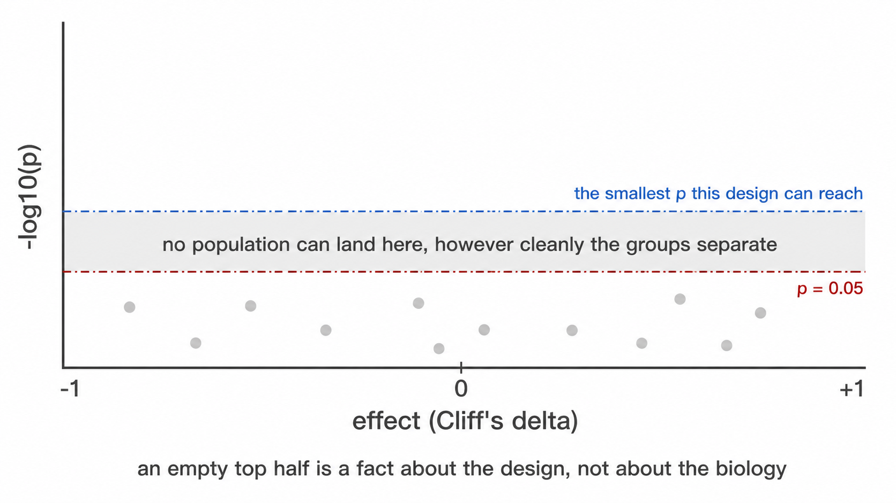

Reference for every file a run writes, its columns, and the flag that produces it. Worked examples of the principal figures, rendered from a run on public data, are in the Worked example; this article is the exhaustive list rather than a second copy of them.
1. Quality control
| File | Content |
|---|---|
recon_diagnostics.png |
Gate boundaries per sample |
gating_qc.png |
Thresholds superimposed on the densities they derive from |
staining_qc.csv |
Per-sample verdict and exclusion reason |
thresholds_used.csv |
Threshold, derivation, cofactor and outlier status per sample and marker |
threshold_scale_qc.csv |
Panel median and robust z per marker |
acquisition_qc.csv, .png
|
Per-sample acquisition stability, and the flagged intervals |
acquisition_qc_bins.csv |
Per-interval rate and channel departure |
acquisition_qc_impact.csv |
How far each population would move if the flagged intervals were excluded |
fmo_agreement.csv |
Derived cut against its FMO-anchored equivalent, in units of the cut’s own uncertainty |
spreading_pairs.csv |
Per channel pair, how much wider the receiver’s negatives become |
spreading_receivers.csv |
Per marker, total spreading received and whether it explains a fallback |
calibration.csv |
Bead fit per channel, written by
--calibration-beads
|
thresholds_used.csv gains override_reason
and override_by only when the config declares a
sample_overrides: block, so a run that overrides nothing
writes the table it always wrote. source is
manual for an overridden cut, fmo_q995 for one
anchored to a fluorescence-minus-one control.
Read acquisition_qc_impact.csv against
u_pct_points for the same population before acting on an
acquisition flag. --drop-unstable-events performs the
exclusion; without it nothing is removed.
These constrain the interpretation of every subsequent file. A run whose gates are misplaced produces internally consistent statistics that are unusable.
2. Uncertainty
| File | Content |
|---|---|
threshold_uncertainty.csv |
Sampling and method components per sample and marker, their quadrature sum, the valley’s relative depth, and the fraction of resamples that found it |
uncertainty_budget.csv |
Contribution of each threshold to each population’s uncertainty, per sample |
frequency_uncertainty.png |
Per-sample frequencies with their uncertainty, one row per population |
uncertainty_budget.png |
The same budget as a stacked median contribution |
detection_limits.png |
Samples per population, split by whether the event count clears each limit |
bootstrap_valley_rate is the column to read first. A
threshold found in every resample is a population boundary; one found in
half of them is histogram noise that happened to clear the depth rule,
and the two are indistinguishable in
thresholds_used.csv.
u_combined is NA rather than zero where it
could not be computed, which happens for a threshold taken from a
separate control tube. n_terms_missing on the frequency
table counts how many of a population’s markers contributed nothing, so
a small total that is small only because most terms are absent is
distinguishable from a genuinely tight one.
Two uncertainties are reported per frequency and they answer
different questions. u_pct_points is placement: how far the
number moves when the cuts behind it move.
u_counting_pct_points is sufficiency: what it carries from
the number of events counted, as the Wilson half-width at one standard
deviation. u_total_pct_points is their quadrature sum. The
two are alike for an abundant population and diverge for a rare one,
where a cut through a wide gap is well determined and the count behind
it is not.
lod_pct and loq_pct place the conventional
twenty and fifty events on the percentage scale of that sample’s parent
gate, and detection says which side of them the value
falls. Both are set by what was acquired rather than by the gating
strategy, so --max-events-per-file raises them in
proportion; --lod-events and --loq-events
change the conventions themselves.
Counting is deliberately not a row in
uncertainty_budget.csv. That table answers which threshold
a population’s uncertainty comes from, and counting is not a
threshold.
Written by default. --no-uncertainty skips it and
restores the previous output exactly.
3. Conformance
Written by --baseline.
| File | Content |
|---|---|
specification_conformance.csv |
Per marker: this run’s threshold against the baseline’s, scaled by the baseline’s own spread, with a verdict |
specification_conformance_populations.csv |
The same for population frequencies |
specification_changes.csv |
Populations added, removed or redefined since the baseline |
Three verdicts. pass is within tolerance,
qualify is a marker worth looking at before pooling the two
runs, fail says the cuts are no longer in the same place
and the frequencies are not the same measurement.
not comparable is a fourth value and means the
comparison was withdrawn rather than made: the transform differs from
the baseline’s, so thresholds are on different scales, or the population
was redefined, so it is a different population and a drift statistic
would be a category error.
--write-baseline writes the reference itself. It
contains summaries and the specification text, no event-level or patient
data, so it can be version-controlled beside the config it
describes.
4. Abundance
| File | Content |
|---|---|
population_frequencies.csv |
Percentage of parent per population per sample |
population_marker_mfi.csv |
Median transformed intensity and percent positive per sample, population and marker |
functional_markers.csv |
The same restricted to functional marker blocks declared in the config |
population_ratios.csv |
Derived ratios where declared |
gate_counts.csv |
Event counts at each level of the gate hierarchy |
population_frequencies.png |
Pooled composition across samples |
population_marker_heatmap.png |
Marker intensity against declared populations, z-scored |
count is an event count and scales with acquisition
duration. It is not an abundance. Report pct_of_cd45_pos
unless absolute counts were supplied through
--absolute-counts.
5. Embedding
| File | Content |
|---|---|
cells_umap.csv |
Per-cell coordinates with sample, population and panel |
umap_overview.png |
Embedding by population and by sample |
umap_markers.png |
One panel per marker |
umap_density.png |
Cell density in embedding space |
umap_density_by_group.png |
The same, faceted by study group |
umap_overview_by_group.png |
Combined embedding with one column per group |
marker_umaps_by_group/ |
Full-size UMAPs per marker, in its own folder.
umap_CD3.png pools every sample, and
umap_CD3_by_<category>.png is written beside it for
every category present, not only the
--group-column one. Numeric columns, identifiers and
single-level columns are not faceted; past four categories the extras
are named in the log |
umap_multigraph_overlay.png |
Per-compartment marker distributions against the reference group |
umap.model, umap.model.meta.rds
|
Persisted model, written by --save-umap-model
|
A persisted model permits projection of subsequent batches into the same coordinate space, holding cluster positions fixed between runs. Projection is refused where the new data lack markers the model used, since zero-filling would produce coordinates that are geometrically valid and biologically meaningless.
6. Inference
| File | Content |
|---|---|
group_comparison_stats.csv |
Abundance between groups, per population |
group_differences.png |
Every population on one pair of axes: the effect against the evidence. The shortlist – read this to decide which panel below to read carefully |
group_comparison.png |
The same as per-sample distributions, one panel per population |
marker_state_stats.csv |
Differential state per population and marker |
marker_state.png |
The same as per-sample distributions |
functional_markers_stats.csv |
Functional blocks between groups |
population_ratios_stats.csv |
Declared ratios between groups |
compositional_clr_stats.csv |
Abundance tests on centred log-ratios |
compositional_concordance.csv |
Classification of each result against both parameterisations |
paired_comparison_stats.csv |
Paired designs, written by --paired-column
|
covariate_adjusted_stats.csv |
Rank ANCOVA, written by --rank-ancova
|
subcluster_marker_shifts.csv |
Pooled-event marker shifts per compartment |
design_feasibility.csv |
Which group comparisons can be made, and why the rest cannot |
parametric_tests.csv |
The t-test or ANOVA equivalent, with its assumptions recorded |
posthoc_tests.csv |
Pairwise comparisons by three methods, for three or more groups |
Every file above except the last three uses one value per sample.
subcluster_marker_shifts.csv operates on pooled events,
carries effect sizes without p-values, and answers a different question
from the tests above it.
group_differences.png
One point per population: Cliff’s delta on the x-axis, -log10 p on the y. A fold change of medians is the conventional x-axis and is the wrong one here, it is unbounded, and at single-digit group sizes it is decided by whichever sample sits at the median, so a population whose reference median is near zero produces a fold change of 40 that means nothing. Cliff’s delta is bounded [-1, 1], is the effect size the rank test corresponds to, and reads directly: 0.5 means the comparison group was higher in three quarters of the cross-sample pairs.

Two horizontal lines. The dashed red one is p = 0.05. The dot-dash
blue one is the smallest p this design can produce at
all: a Wilcoxon rank-sum test has
choose(n1 + n2, n1) equally likely rank arrangements under
the null, so the most extreme possible separation gives a two-sided p of
2 / choose(n1 + n2, n1) and nothing below it is reachable.
At 4 against 5 that floor is 0.016, and after correcting across a dozen
populations no population can reach 0.05 however cleanly the groups
separate. When the blue line sits above the red one, an empty
upper region of the figure says nothing about biology, it is a property
of the design, and the figure says so rather than leaving the reader to
work it out.
The floor is drawn per comparison, not once for the figure: each comparison group has its own size and so its own minimum, and 3 against 6 stops at 0.024 where 6 against 6 reaches 0.0022. With three or more groups the figure facets by comparison and each panel carries its own line.
design_feasibility.csv
Read before any of the tests. One row per group, carrying
n_samples, n_donors,
will_be_tested, valid_unpaired and a
reason.
Two failures it is there to catch. A group smaller than
--min-group-n is skipped, and a skipped comparison looks
exactly like a comparison that ran and found nothing, because both
produce no row. And a donor contributing to more than one group, which
happens whenever the group column is a timepoint, makes an unpaired test
treat repeated measures on one person as independent observations. That
second one is the dangerous case, because the test runs and its output
is well formed. will_be_tested says what the run did;
valid_unpaired says whether it should have.
parametric_tests.csv and
posthoc_tests.csv
The rank tests remain the primary result. These hold the parametric equivalents most immunology papers report, computed on arcsine square root transformed percentages, which stabilises the variance of proportion data.
Two groups give Welch’s t-test with Student’s alongside it and
Cohen’s d. Three or more give Welch’s ANOVA with the classical
one-way alongside it and eta squared. posthoc_tests.csv
then carries Games-Howell, Tukey HSD and Dunn for every pair.
Every row records shapiro_p and
brown_forsythe_p with the derived
residuals_normal, equal_variance and
assumptions_met. Where assumptions_met is
FALSE the rank test is the defensible one, and the
recommended column says which test to read. Normality is
tested on the within-group residuals, not the pooled values, because
pooled values are bimodal whenever the groups genuinely differ.
Disable with --no-parametric.
7. Diagnostics
| File | Content |
|---|---|
threshold_drift_stats.csv,
threshold_drift.png
|
Whether thresholds separate by group |
confounding_diagnostics.csv |
Covariate imbalance, outcome association, and verdict |
batch_mixing_stats.csv |
iLISI against a permutation null |
batch_group_confounding.csv |
Cramér’s V and correction verdict |
batch_diagnostic.png |
Observed against null mixing |
populations_by_batch.png |
Every population’s abundance per acquisition batch, one box per
batch and a point per sample. batch_diagnostic.png asks
whether the embedding separates by batch; this asks whether the
reported numbers do, which is the question that decides whether
a group difference might be an acquisition difference |
Clinical variables, written by --clinical-columns
A severity score, a laboratory value or an outcome flag is neither
the study group nor a confounder. A confounder is screened to decide
whether a group difference can be believed; a clinical variable is the
question. Name any sheet column with --clinical-columns, or
samples: clinical_columns: in the config , and it is
associated with every population and every marker.
| File | Content |
|---|---|
clinical_variables_correlation.png |
The clinical variables against each other. Read this first, see below |
clinical_association.csv |
One row per population × variable: test, n, the effect with its
bootstrap interval, raw and BH-adjusted p, the levels or range tested,
and an underpowered flag |
clinical_association.png |
Heatmap of the signed effect, populations against variables, with
* on the tiles that survive correction |
clinical_landscape.png |
The whole cohort as one picture: one column per sample ordered by the first numeric variable, every clinical variable as a strip above, every population as a z-scored row below |
clinical_effects_<variable>.png |
Every population’s effect against that variable, ordered, with a 95% percentile bootstrap interval on each |
clinical_<variable>.png |
The data behind one column of the heatmap: a scatter against a numeric variable, a box plot against a categorical one, one point per sample and one panel per population |
clinical_association_markers.csv,
clinical_association_markers.png
|
The same against per-sample median marker intensity, collapsed across populations |
population_trajectories.png |
Written by --paired-column with
--condition-column, and coloured by the first two-level
clinical column when there is one: per-patient lines across the
conditions with the median over them |
The test follows the variable’s type rather than being chosen: Spearman’s rho for a numeric column, Wilcoxon rank-sum with Cliff’s delta for a two-level column, Kruskal-Wallis with epsilon-squared for more levels. Rank methods throughout, for the reason they are used everywhere else here, clinical scores are ordinal by construction, laboratory values are skewed with outliers that are real rather than erroneous, and cohorts are small.
Epsilon-squared is H / (n - 1), the proportion of rank
variance the grouping accounts for. It is unsigned: a
variable with three levels has a magnitude but no single direction,
which is why the signed column exists and why those tiles
stay grey on the heatmap rather than being coloured as though they
pointed somewhere.
The effect, its interval, and why they come before the p-value
ci_low and ci_high are a 95% percentile
bootstrap interval on the effect, 2000 resamples of the patient-value
pairs for Spearman, stratified within each arm for Cliff’s delta, from a
fixed seed so the same table always yields the same interval.
clinical_effects_<variable>.png draws them ordered by
effect.
On ten patients most intervals span zero, and that is the finding: a rho of 0.61 whose interval runs -0.1 to 0.9 is a lead worth powering a follow-up on, not a result. The interval is itself approximate at this size, below about nine observations the bootstrap’s effective resample is smaller than the nominal one and coverage falls short of 95%, so read a wide interval as this cohort does not constrain the effect rather than as a precise range. It is suppressed entirely below six samples rather than quoted at a width nobody should trust.
Read the variables against each other first
Benjamini-Hochberg is applied within each variable, which treats the
variables as separate questions. That holds only when they carry
different information. A cohort where the sickest patients are also the
ones who died has one gradient and two columns
describing it, and an association found against both is one finding
reported twice. clinical_variables_correlation.png is where
that is visible: circle area is the absolute Spearman coefficient, fill
is its sign, and the number is printed where the unadjusted p-value is
below 0.05. Two-level variables are included coded 0/1, for which
Spearman is the rank-biserial correlation; variables with three or more
unordered levels are excluded and named in the caption, because there is
no ordering to correlate and coding them 1/2/3 would invent one.
Benjamini-Hochberg is applied within each variable, across the populations tested against it, because each variable is its own question asked of every population. Pooling across variables would penalise a well-powered variable for the company it keeps.
Two things this deliberately is not. It is not survival analysis: a 28-day flag is tested as the two-group comparison it is, and no time-to-event model is fitted because the sheet carries no follow-up time. And it is not a claim about cells: every test runs on one value per sample, so the replicates are subjects. Correlating a score against tens of thousands of events would treat one deeply acquired patient as tens of thousands of observations.
Read the effect before the asterisk. On a small cohort these tests
detect only very large effects, so a null result says little, and the
underpowered column marks every test run on fewer than ten
samples. | marker_batch_drift.csv | Earth Mover’s distance
between batches per marker, in analysis units and scaled by the marker’s
own MAD | | threshold_batch_drift.csv | The threshold test
above, grouped by batch instead of by study group | |
batch_correction.csv | Whether a correction ran, which
method fitted it, the Cramér’s V it was judged on, and the
reason. Written whenever --correct-batch is set, including
on a refusal |
The last two are written by --batch-column and answer
the question the first three cannot: which channel moved. iLISI is a
property of the embedding, so a flagged run names nothing actionable,
whereas a flagged marker names a reagent lot or a detector.
Read emd_over_mad rather than emd_max: the
raw distance is in the units of whichever marker it describes, and
dividing by that marker’s own spread is what makes two of them
comparable. worst_pair names the batches responsible.
Both tables are needed. A threshold is one number per sample and registers only drift that moves the cut, while a marker can change its spread or lose the separation between its modes with the density minimum between them unmoved.
| File | Content |
|---|---|
run_manifest.txt |
Versions, commit, invocation, options |
8. Clustering
Written under --cluster and
--explain-clusters.
| File | Content |
|---|---|
unsupervised_clusters.csv, .png
|
Cluster assignment per cell |
cluster_gate_agreement_clusters.csv |
Dominant label and purity per cluster |
cluster_gate_agreement_populations.csv |
Recovery of each declared population |
subcluster_k_selection.csv |
Silhouette-selected k, from --auto-subcluster-k
|
cluster_gate_proposals.csv |
Learned gate geometry with held-out metrics |
cluster_gate_polygons.csv |
Polygon vertices in transformed units |
cluster_gate_strategy_<k>.png |
One figure per explained cluster |
9. External labels
Written by --external-labels, and by
--export-gates for the last two.
| File | Content |
|---|---|
external_label_gates.csv |
Learned strategy per supplied label, with held-out metrics at each depth |
external_label_polygons.csv |
Polygon vertices on the analysis scale |
gate_transferability.csv |
Precision, recall and F1 on each donor, from a strategy refitted without that donor |
gate_transferability_summary.csv |
Minimum, median, maximum and IQR of F1 across donors |
external_label_strategy_<label>.png |
One figure per label |
*.gatingml.xml |
ISAC Gating-ML 2.0, linear units, levels chained parent to child |
*_polygons_linear.csv |
The same vertices as a table, for redrawing by hand |
Read f1_min from the summary, not
f1_median. A gate scoring 0.9 on every donor and a gate
scoring 1.0 on nine donors and 0.1 on one have the same median and are
not the same gate.
The Gating-ML vertices are subdivided along each edge. An edge that
is straight on the analysis scale is a curve in the linear units the FCS
file stores, so a polygon built from the corners alone would describe a
different region from the one that was fitted and validated. Dimensions
are named by marker symbol, which is what cyRAVEN resolves from
$PnS.
10. Auxiliary
| File | Content |
|---|---|
run_manifest.txt |
R and package versions, git commit, invocation, options, run status |
miflowcyt.md |
The same run against the ISAC reporting checklist |
report.html |
Every output above embedded in one self-contained file, in the order this documentation says to read them. Written for failed runs too, with a diagnosis |
patient_metadata_english.csv |
Patient table after column mapping and value translation |
absolute_counts.csv,
absolute_counts.png
|
Measured cells per microlitre per sample and population, written by
--absolute-counts
|
absolute_counts_raw.csv |
The supplied workbook flattened to CSV exactly as read, before any
header or population-name interpretation. Open this first when a
population from --absolute-counts looks wrong: it separates
a reading problem from a mapping one |
absolute_counts_stats.csv |
Between-group tests on the measured counts, on
cells_per_ul. Written when the run performs group tests, so
it needs --group-column and is absent under
--no-group-tests
|
absolute_counts_qc.png |
The supplied counts against the frequencies this run measured, same flag. Written unconditionally whenever counts are supplied, and deliberately before the group-comparison figure, because a unit or mapping error has to be visible before the more inviting figure is read as a finding |
populations_unavailable.csv |
One row per sample and population the panel cannot score, with the reason. Written only when there is at least one |
flowjo/ |
UMAP-annotated FCS, written by --flowjo-export
|
config_derived.yaml |
Derived parameters, written by --write-config
|
sample_map_template.csv |
Written by --write-sample-map
|
The --absolute-counts input
A frequency is a proportion of a parent gate, so it moves when any other population moves. An absolute concentration does not, which is why bead-based or volumetric counts are worth carrying through the run when the laboratory measured them.
The flag takes a CSV or Excel sheet laid out as the counting instrument exports it: the first row is a header, the first column identifies the sample, and every further column whose header is non-empty and whose body is numeric is read as a population. Blank rows are skipped, so cohort separators do not need removing.
sample, Granulocytes, Monocytes, Lymphocytes
HC-13;2.fcs, 3810, 420, 1650
HC-14;1.fcs, 2990, 395, 1880Units come from any header cell that is not itself a population
column. A label containing microlitre, uL or
µL is read as cells per microlitre; one containing
mL or millilitre is converted by dividing by 1000. When no
unit label is present the values are assumed to be cells per microlitre
already and the log says so; verify that before trusting the figure.
Each row is matched to a sample_id by
patient_id first and then by acquisition filename, both
insensitive to case, surrounding whitespace, a .fcs
extension and a trailing copy. The filename match is a
suffix match with a delimiter required immediately before it, because
export sheets routinely omit the batch prefix the acquisition filename
carries. A key matching more than one file is treated as no match rather
than guessed at, and every unmatched row is named in the log.
--absolute-counts needs --sample-map, since
that is where the join key lives.
miflowcyt.md completes the two checklist sections a run
can establish. The instrument section comes from the FCS keyword block:
cytometer, serial, acquisition software, date, operator and event counts
per file, then one detector table per panel with $PnN,
$PnS, voltage, range and amplification mode. The
data-analysis section comes from the run, so the compensation statement,
the transform and its parameters, the gate hierarchy, the population
specification and the tally of how the thresholds were obtained all
describe what was actually computed.
Experiment intent and specimen biology are marked
TO BE COMPLETED, and a keyword the file does not carry is
written as not recorded in the FCS file rather than
dropped. Both follow the same rule: an absent line reads as a line that
did not apply, and neither of those is true here.
report.html
The reading order made navigable, and the one file worth sending to someone else. Each section states what it reports and how to read the outputs under it, and a run that excluded samples says so above every result.
It is self-contained. Every figure is embedded at
full resolution and every table in full, so it can be moved, attached to
an email or archived on its own; it references no other file, loads no
font or script from a network, and works from a file://
path. A report whose images live beside it becomes a page of broken
icons the moment it is moved, and a result that cannot survive being
moved is not a record.
| Feature | Behaviour |
|---|---|
| Sections | Collapsible, with a sidebar indexing every section, figure and table, and expand/collapse-all |
| Figures | Uniform display box whatever the native aspect ratio; click to zoom,
with keyboard +/- and Escape; download the
original PNG at full resolution |
| Tables | Searchable across all columns, sortable by clicking a heading, shown 10, 50, 100 or all rows, scrollable with a sticky header |
| Export | Any table exports to CSV exactly as filtered and sorted, so what you export is what you were looking at |
| Completeness | Every figure and table the run wrote appears; anything no section names is collected under “Further outputs” rather than omitted |
Its size is the sum of the figures it carries, which on a full run is
tens of megabytes. A table larger than 8 MB is named with its row count
instead of being embedded, which in practice means only the per-cell
exports; the limit is
options(cyRAVEN.report_table_max_mb = ).
A run that fails writes it too. The diagnosis comes
first: the error, the stage the run reached, the log leading up to it,
what the message means for the data rather than for R, and the next
action. Everything produced before the failure is embedded below,
because that partial output is usually where the evidence is. A
gating_qc.png written before the failure often shows the
cause directly.
--no-miflowcyt and --no-report skip those
two. --write-config, --write-samples and
--write-sample-map terminate after writing and cannot be
combined with a full run, and --check validates the inputs
and exits without writing anything.
The FlowJo export writes one pooled file, one per sample and one per
group. Open _ALL_SAMPLES.fcs, plot UMAP-1 against UMAP-2,
and decode the Population, SampleID and CohortID parameters using
population_codes.csv.
10a. The statistics catalogue
Written on every run, grouped or not.
| File | Content |
|---|---|
statistical_methods.csv |
Every commonly reported method in the immunophenotyping and cytometry literature, whether this run computed it, and why |
normality_tests.csv |
Shapiro-Wilk per population per group, and Brown-Forsythe for equal variances across groups |
These exist because a reader arriving from a paper that reports
t-tests and ANOVA finds rank tests here instead.
statistical_methods.csv names Student’s and Welch’s
t, one-way and two-way ANOVA with Tukey, repeated measures,
Mann-Whitney, Kruskal-Wallis with Dunn, chi-squared, Bonferroni and the
diffcyt family, and states what was done about each.
normality_tests.csv is the evidence for that choice.
Read its interpretation column rather than
shapiro_p alone: Shapiro-Wilk on 4 to 10 donors has almost
no power, so a non-significant result is not evidence
of normality, and the column says so. That fact is itself the argument
for the rank test.
What deliberately does not happen is running every test and reporting all the p-values. At these group sizes, choosing among six p-values per population is p-hacking with extra steps.
10b. explore/: unsupervised discovery
Written only under --explore or
--explore-only, and only into this subdirectory. Nothing
outside it changes.
| File | Content |
|---|---|
explore_report.html |
Self-contained report, separate from report.html
|
explore_cluster_profile.csv |
Per cluster: size, phenotype string, fraction positive and median per channel |
explore_qc_clusters.csv |
The cluster-level gate: call and the basis
for it |
explore_cluster_abundance.csv |
Per donor per cluster, with counting uncertainty and LOD/LOQ |
explore_cluster_stats.csv |
Donor-level group tests, carrying the batch/group confounding verdict |
explore_cells.csv |
One row per cell: sample, event index, cluster, UMAP coordinates |
explore_vs_populations.csv |
Cross-tab against the declared labels |
explore_findings.csv |
Clusters no declared population covers |
explore_population_split.csv |
Declared labels spanning several clusters |
explore_suggested_spec.yaml |
A draft specification, for curation |
explore_provenance.csv |
Every choice explore made, and on what basis |
Figures: explore_umap_clusters.png,
explore_cluster_heatmap.png,
explore_umap_by_group.png,
explore_umap_markers.png, and
explore_marker_umaps_by_group/.
The last four tables appear only when a specification was scored
and --maybe-learn is set. Without that
flag the two analyses are computed in isolation and neither sees the
other; see Explore mode.
spec_gaps.csv is the one file explore may add to the run
directory itself, and only under --maybe-learn. It names
declared populations spanning several clusters and clusters no
population covers.